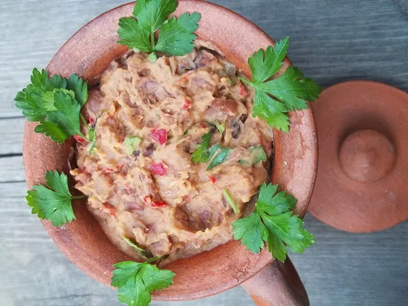

Фото: Georgian Recipes at Georgia About, CC BY 3.0

Лобио из фасоли
Грузинская красная фасоль с луком, орехами, чесноком и кинзой
150 мин4 порц.426 ккал на порциюБ 20 · Ж 19 · У 44Кавказская кухня
Продукты на 4 порц.
- Фасоль сухая1,5 стак.
- Вода2000 мл
- Лук репчатый2 шт
- Грецкие орехи60 г
- Чеснок3 зуб.
- Кинза1 пучок
- Томатная паста1 ст. л.
- Хмели-сунели1 ч. л.
- Уксус 9%2 ч. л.
- Растительное масло2 ст. л.
- Соль1 ч. л.
- Острый перец молотый по желанию1 щеп.
Как готовить
- Замочите фасоль в холодной воде на 8-10 часов или на ночь.
- Слейте воду, залейте свежей и варите на слабом огне 1,5-2 часа без соли, пока фасоль не станет мягкой и не будет легко раздавливаться пальцами.
- Нарежьте лук мелким кубиком и обжарьте на масле на среднем огне 5-7 минут до золотистого цвета. Добавьте томатную пасту, жарьте 1 минуту.
- Измельчите орехи и чеснок в ступке или блендере.
- Слейте с фасоли почти всю воду, оставив около стакана. Слегка разомните часть фасоли толкушкой.
- Добавьте лук, орехи с чесноком, хмели-сунели, уксус, соль и острый перец. Прогрейте на слабом огне 5 минут.
- Выключите огонь, вмешайте рубленую кинзу. Подавайте тёплым или холодным.
Совет. Солите фасоль только в конце, иначе она долго не разварится. Для быстрого варианта возьмите 2 банки консервированной фасоли, тогда всё готово за 20 минут.